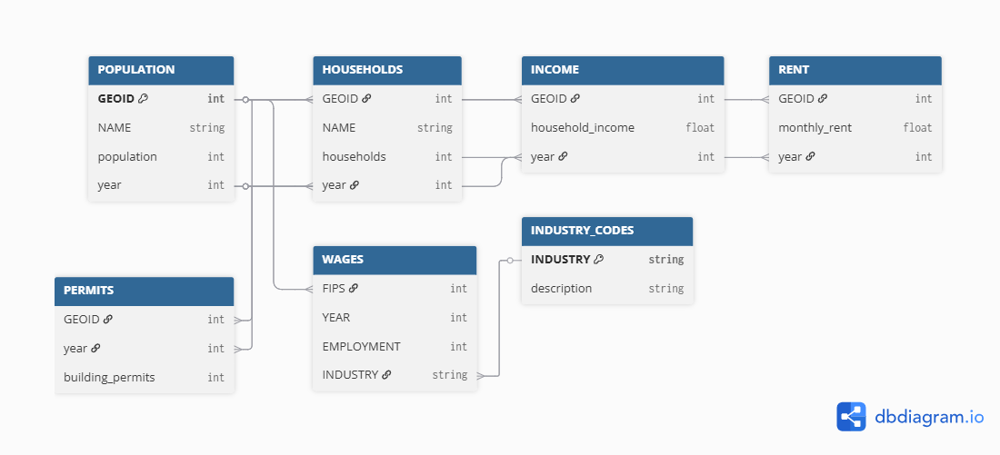
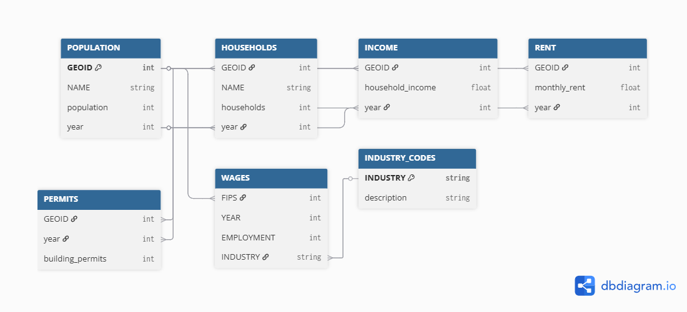
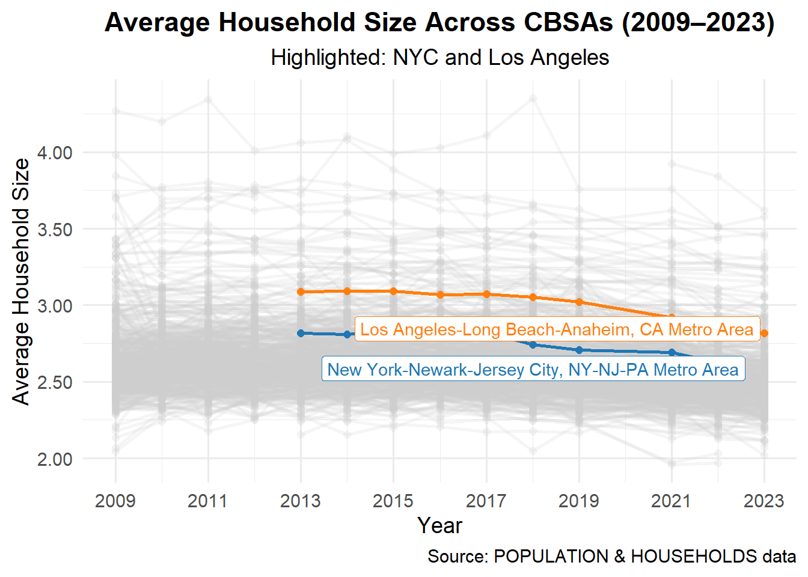

Code
# Display the YIMBY relationships image responsively
knitr::include_graphics("YIMBY_relationships.png.png")
XiuYing Lan
Housing affordability is one of the biggest challenges many cities face today, especially in places like New York City. This project looks at how zoning policies and building permit activity can tell us more about how cities approach new housing development—whether they lean toward being “NIMBY” (Not In My Backyard) or “YIMBY” (Yes In My Backyard). Inspired by YouTuber Ray Delahanty’s CityNerd project, we’ll analyze data from different sources to identify which U.S. cities show more YIMBY-like characteristics that support growth and affordable housing.
In this mini-project, we combine and clean multiple datasets, then use R tools like dplyr for data manipulation and ggplot2 for creating visualizations. These graphs help us explore housing trends and construction activity over time. The goal is to use this analysis to support a short policy brief that promotes a federal YIMBY-incentive program—showing how data analytics can be used to connect real-world housing issues with informed policy ideas.

The following key relationships structure the data for our analysis:
GEOID and year. This ensures that household counts correspond to the correct metropolitan area and year.GEOID and year, allowing computation of rent burden and per-capita income metrics.GEOID and year to calculate rent affordability for each area over time.GEOID and year, supporting measures of housing growth relative to the existing population.WAGES links to population through FIPS (matching CBSA codes) and to industry classifications via INDUSTRY, enabling analysis of occupational impacts on housing and rent affordability.These relationships allow us to merge diverse datasets consistently and construct meaningful metrics such as rent burden, housing growth, and YIMBY success.
if(!dir.exists(file.path("data", "mp02"))){
dir.create(file.path("data", "mp02"), showWarnings=FALSE, recursive=TRUE)
}
library <- function(pkg){
## Mask base::library() to automatically install packages if needed
## Masking is important here so downlit picks up packages and links
## to documentation
pkg <- as.character(substitute(pkg))
options(repos = c(CRAN = "https://cloud.r-project.org"))
if(!require(pkg, character.only=TRUE, quietly=TRUE)) install.packages(pkg)
stopifnot(require(pkg, character.only=TRUE, quietly=TRUE))
}
library(tidyverse)── Attaching core tidyverse packages ──────────────────────── tidyverse 2.0.0 ──
✔ dplyr 1.1.4 ✔ readr 2.1.5
✔ forcats 1.0.0 ✔ stringr 1.5.1
✔ ggplot2 3.5.2 ✔ tibble 3.3.0
✔ lubridate 1.9.4 ✔ tidyr 1.3.1
✔ purrr 1.1.0
── Conflicts ────────────────────────────────────────── tidyverse_conflicts() ──
✖ dplyr::filter() masks stats::filter()
✖ dplyr::lag() masks stats::lag()
ℹ Use the conflicted package (<http://conflicted.r-lib.org/>) to force all conflicts to become errorslibrary(glue)
library(readxl)
library(tidycensus)
get_acs_all_years <- function(variable, geography="cbsa",
start_year=2009, end_year=2023){
fname <- glue("{variable}_{geography}_{start_year}_{end_year}.csv")
fname <- file.path("data", "mp02", fname)
if(!file.exists(fname)){
YEARS <- seq(start_year, end_year)
YEARS <- YEARS[YEARS != 2020] # Drop 2020 - No survey (covid)
ALL_DATA <- map(YEARS, function(yy){
tidycensus::get_acs(geography, variable, year=yy, survey="acs1") |>
mutate(year=yy) |>
select(-moe, -variable) |>
rename(!!variable := estimate)
}) |> bind_rows()
write_csv(ALL_DATA, fname)
}
read_csv(fname, show_col_types=FALSE)
}
# Household income (12 month)
INCOME <- get_acs_all_years("B19013_001") |>
rename(household_income = B19013_001)
# Monthly rent
RENT <- get_acs_all_years("B25064_001") |>
rename(monthly_rent = B25064_001)
# Total population
POPULATION <- get_acs_all_years("B01003_001") |>
rename(population = B01003_001)
# Total number of households
HOUSEHOLDS <- get_acs_all_years("B11001_001") |>
rename(households = B11001_001)get_building_permits <- function(start_year = 2009, end_year = 2023){
fname <- glue("housing_units_{start_year}_{end_year}.csv")
fname <- file.path("data", "mp02", fname)
if(!file.exists(fname)){
HISTORICAL_YEARS <- seq(start_year, 2018)
HISTORICAL_DATA <- map(HISTORICAL_YEARS, function(yy){
historical_url <- glue("https://www.census.gov/construction/bps/txt/tb3u{yy}.txt")
LINES <- readLines(historical_url)[-c(1:11)]
CBSA_LINES <- str_detect(LINES, "^[[:digit:]]")
CBSA <- as.integer(str_sub(LINES[CBSA_LINES], 5, 10))
PERMIT_LINES <- str_detect(str_sub(LINES, 48, 53), "[[:digit:]]")
PERMITS <- as.integer(str_sub(LINES[PERMIT_LINES], 48, 53))
data_frame(CBSA = CBSA,
new_housing_units_permitted = PERMITS,
year = yy)
}) |> bind_rows()
CURRENT_YEARS <- seq(2019, end_year)
CURRENT_DATA <- map(CURRENT_YEARS, function(yy){
current_url <- glue("https://www.census.gov/construction/bps/xls/msaannual_{yy}99.xls")
temp <- tempfile()
download.file(current_url, destfile = temp, mode="wb")
fallback <- function(.f1, .f2){
function(...){
tryCatch(.f1(...),
error=function(e) .f2(...))
}
}
reader <- fallback(read_xlsx, read_xls)
reader(temp, skip=5) |>
na.omit() |>
select(CBSA, Total) |>
mutate(year = yy) |>
rename(new_housing_units_permitted = Total)
}) |> bind_rows()
ALL_DATA <- rbind(HISTORICAL_DATA, CURRENT_DATA)
write_csv(ALL_DATA, fname)
}
read_csv(fname, show_col_types=FALSE)
}
PERMITS <- get_building_permits()
Attaching package: 'rvest'The following object is masked from 'package:readr':
guess_encodingget_bls_industry_codes <- function(){
fname <- file.path("data", "mp02", "bls_industry_codes.csv")
library(dplyr)
library(tidyr)
library(readr)
if(!file.exists(fname)){
resp <- request("https://www.bls.gov") |>
req_url_path("cew", "classifications", "industry", "industry-titles.htm") |>
req_headers(`User-Agent` = "Mozilla/5.0 (Macintosh; Intel Mac OS X 10.15; rv:143.0) Gecko/20100101 Firefox/143.0") |>
req_error(is_error = \(resp) FALSE) |>
req_perform()
resp_check_status(resp)
naics_table <- resp_body_html(resp) |>
html_element("#naics_titles") |>
html_table() |>
mutate(title = str_trim(str_remove(str_remove(`Industry Title`, Code), "NAICS"))) |>
select(-`Industry Title`) |>
mutate(depth = if_else(nchar(Code) <= 5, nchar(Code) - 1, NA)) |>
filter(!is.na(depth))
# These were looked up manually on bls.gov after finding
# they were presented as ranges. Since there are only three
# it was easier to manually handle than to special-case everything else
naics_missing <- tibble::tribble(
~Code, ~title, ~depth,
"31", "Manufacturing", 1,
"32", "Manufacturing", 1,
"33", "Manufacturing", 1,
"44", "Retail", 1,
"45", "Retail", 1,
"48", "Transportation and Warehousing", 1,
"49", "Transportation and Warehousing", 1
)
naics_table <- bind_rows(naics_table, naics_missing)
naics_table <- naics_table |>
filter(depth == 4) |>
rename(level4_title=title) |>
mutate(level1_code = str_sub(Code, end=2),
level2_code = str_sub(Code, end=3),
level3_code = str_sub(Code, end=4)) |>
left_join(naics_table, join_by(level1_code == Code)) |>
rename(level1_title=title) |>
left_join(naics_table, join_by(level2_code == Code)) |>
rename(level2_title=title) |>
left_join(naics_table, join_by(level3_code == Code)) |>
rename(level3_title=title) |>
select(-starts_with("depth")) |>
rename(level4_code = Code) |>
select(level1_title, level2_title, level3_title, level4_title,
level1_code, level2_code, level3_code, level4_code) |>
drop_na() |>
mutate(across(contains("code"), as.integer))
write_csv(naics_table, fname)
}
read_csv(fname, show_col_types=FALSE)
}
INDUSTRY_CODES <- get_bls_industry_codes()library(httr2)
library(rvest)
get_bls_qcew_annual_averages <- function(start_year=2009, end_year=2023){
fname <- glue("bls_qcew_{start_year}_{end_year}.csv.gz")
fname <- file.path("data", "mp02", fname)
YEARS <- seq(start_year, end_year)
YEARS <- YEARS[YEARS != 2020] # Drop Covid year to match ACS
if(!file.exists(fname)){
ALL_DATA <- map(YEARS, .progress=TRUE, possibly(function(yy){
fname_inner <- file.path("data", "mp02", glue("{yy}_qcew_annual_singlefile.zip"))
if(!file.exists(fname_inner)){
request("https://www.bls.gov") |>
req_url_path("cew", "data", "files", yy, "csv",
glue("{yy}_annual_singlefile.zip")) |>
req_headers(`User-Agent` = "Mozilla/5.0 (Macintosh; Intel Mac OS X 10.15; rv:143.0) Gecko/20100101 Firefox/143.0") |>
req_retry(max_tries=5) |>
req_perform(fname_inner)
}
if(file.info(fname_inner)$size < 755e5){
warning(sQuote(fname_inner), "appears corrupted. Please delete and retry this step.")
}
read_csv(fname_inner,
show_col_types=FALSE) |>
mutate(YEAR = yy) |>
select(area_fips,
industry_code,
annual_avg_emplvl,
total_annual_wages,
YEAR) |>
filter(nchar(industry_code) <= 5,
str_starts(area_fips, "C")) |>
filter(str_detect(industry_code, "-", negate=TRUE)) |>
mutate(FIPS = area_fips,
INDUSTRY = as.integer(industry_code),
EMPLOYMENT = as.integer(annual_avg_emplvl),
TOTAL_WAGES = total_annual_wages) |>
select(-area_fips,
-industry_code,
-annual_avg_emplvl,
-total_annual_wages) |>
# 10 is a special value: "all industries" , so omit
filter(INDUSTRY != 10) |>
mutate(AVG_WAGE = TOTAL_WAGES / EMPLOYMENT)
})) |> bind_rows()
write_csv(ALL_DATA, fname)
}
ALL_DATA <- read_csv(fname, show_col_types=FALSE)
ALL_DATA_YEARS <- unique(ALL_DATA$YEAR)
YEARS_DIFF <- setdiff(YEARS, ALL_DATA_YEARS)
if(length(YEARS_DIFF) > 0){
stop("Download failed for the following years: ", YEARS_DIFF,
". Please delete intermediate files and try again.")
}
ALL_DATA
}
WAGES <- get_bls_qcew_annual_averages()Question 1 — Which CBSA permitted the largest number of new housing units in 2010–2019 (inclusive)?
library(dplyr)
library(DT)
library(htmltools)
library(stringr)
# Filter permits for 2010-2019 and sum by CBSA
perm_2010_2019 <- PERMITS %>%
filter(year >= 2010, year <= 2019) %>%
group_by(CBSA) %>%
summarise(total_permits = sum(new_housing_units_permitted, na.rm = TRUE)) %>%
arrange(desc(total_permits))
# Get top CBSA id
top_cbsa_id <- perm_2010_2019$CBSA[1]
# Map to CBSA name using ACS table
acs_cbsa_names <- INCOME %>%
select(GEOID, NAME) %>%
distinct()
# Attempt exact match, fallback to partial string match
candidate_name <- acs_cbsa_names %>%
filter(as.integer(GEOID) == top_cbsa_id) %>%
pull(NAME)
if(length(candidate_name) == 0) {
candidate_name <- acs_cbsa_names %>%
filter(str_detect(NAME, as.character(top_cbsa_id))) %>%
pull(NAME) %>% unique()
}
# Create table
top_cbsa_tbl <- tibble(
top_cbsa_id = top_cbsa_id,
top_cbsa_name = candidate_name,
total_permits = perm_2010_2019$total_permits[1]
)
# Show formatted table
datatable(
top_cbsa_tbl,
rownames = FALSE,
options = list(pageLength = 5, autoWidth = TRUE),
caption = htmltools::tags$caption(
style = 'caption-side: top; text-align: left; font-weight: bold;',
"Top CBSA by New Housing Units (2010–2019)"
)
)Answer: The top CBSA is Houston-Sugar Land-Baytown, TX Metro Area, Houston-The Woodlands-Sugar Land, TX Metro Area, Houston-Pasadena-The Woodlands, TX Metro Area with 482,075 total permits (2010–2019).
Question 2 — In what year did Albuquerque, NM (CBSA number 10740) permit the most new housing units?
# Filter for Albuquerque and sum permits by year
albuquerque_permits <- PERMITS %>%
filter(CBSA %in% c(10740, "10740")) %>%
group_by(year) %>%
summarise(year_permits = sum(new_housing_units_permitted, na.rm = TRUE)) %>%
arrange(desc(year_permits))
# Identify peak year
albuquerque_peak <- albuquerque_permits %>% slice(1)
albuquerque_peak_year <- albuquerque_peak$year
albuquerque_max <- albuquerque_peak$year_permits
# Show formatted table
datatable(
albuquerque_permits,
rownames = FALSE,
options = list(pageLength = 10, autoWidth = TRUE),
caption = htmltools::tags$caption(
style = 'caption-side: top; text-align: left; font-weight: bold;',
"Albuquerque, NM — New Housing Units by Year"
)
)Answer: Albuquerque peaked in 2021 with 4021 permits.
Question 3 — Which state had the highest average individual income in 2015?
# Principal state abbreviation from CBSA NAME
extract_state <- function(name) stringr::str_match(name, ", ([A-Z]{2})")[,2]
# Code for state name look-up function
state_df <- tibble::tibble(
abb = c(state.abb, "DC", "PR"),
name = c(state.name, "District of Columbia", "Puerto Rico")
)
q2_base_2015 <- INCOME |>
filter(year == 2015) |>
left_join(HOUSEHOLDS |> filter(year == 2015),
by = c("GEOID","NAME","year")) |>
left_join(POPULATION |> filter(year == 2015),
by = c("GEOID","NAME","year")) |>
mutate(state = extract_state(NAME),
total_income = household_income * households)
q2_3 <- q2_base_2015 |>
group_by(state) |>
summarise(
total_income = sum(total_income, na.rm = TRUE),
total_population = sum(population, na.rm = TRUE),
.groups = "drop"
) |>
mutate(avg_individual_income = total_income / total_population) |>
arrange(desc(avg_individual_income)) |>
left_join(state_df, by = c("state" = "abb"))
library(DT)
library(htmltools)
# Creating a clean table for display
q2_3_tbl <- q2_3 |>
dplyr::filter(!is.na(state)) |>
dplyr::transmute(
State = name,
Abbrev = state,
`Avg Individual Income (2015)` = avg_individual_income,
Population = total_population,
`Total Income` = total_income
) |>
dplyr::arrange(dplyr::desc(`Avg Individual Income (2015)`))
datatable(
q2_3_tbl,
rownames = FALSE,
class = "compact stripe hover order-column nowrap",
caption = tags$caption(
style = "caption-side: top; text-align: left; font-weight:600;",
"Average individual income by state (constructed as total_income / total_population), 2015"
),
options = list(
pageLength = 10,
autoWidth = TRUE,
dom = "t", # removed Buttons and set to 't' for a simple table
order = list(list(2, "desc"))
)
) |>
formatCurrency(
"Avg Individual Income (2015)",
currency = "$", digits = 0
) |>
formatCurrency(
"Total Income",
currency = "$", digits = 0
) |>
formatRound(
"Population",
digits = 0, interval = 3, mark = ","
)Answer: The state with the highest average individual income in 2015 was District of Columbia, with an average income of $33,232.88 per person.
Question 4 — Last year NYC had most data scientists (NAICS 5182)
library(dplyr)
library(DT)
library(htmltools)
# 1) Prepare ACS CBSA names with standardized CBSA codes
acs_key <- INCOME %>%
filter(year == max(year, na.rm = TRUE)) %>%
select(GEOID, NAME) %>%
distinct() %>%
mutate(std_cbsa = paste0("C", GEOID)) # e.g., "C35620" for NYC
# 2) Leaders by year for NAICS 5182 (Data Scientists / Business Analysts)
leaders_5182 <- WAGES %>%
filter(INDUSTRY == 5182) %>%
group_by(FIPS, YEAR, INDUSTRY) %>%
summarise(EMP_DS = sum(EMPLOYMENT, na.rm = TRUE), .groups = "drop") %>%
# Pad BLS CBSA code: "C3562" -> "C35620" to match ACS
mutate(std_cbsa = if_else(nchar(FIPS) == 5, paste0(FIPS, "0"), FIPS)) %>%
arrange(YEAR, desc(EMP_DS)) %>%
group_by(YEAR) %>%
slice_max(order_by = EMP_DS, n = 1, with_ties = FALSE) %>%
ungroup() %>%
left_join(acs_key, by = "std_cbsa") %>%
select(std_cbsa, YEAR, INDUSTRY, EMP_DS, GEOID, NAME)
# 3) Last year NYC led (NYC std_cbsa = "C35620")
nyc_last_year <- leaders_5182 %>%
filter(std_cbsa == "C35620") %>%
summarise(last_year_led = max(YEAR, na.rm = TRUE)) %>%
pull(last_year_led)
# 4) Format table for display
leaders_5182_tbl <- leaders_5182 %>%
dplyr::transmute(
Year = YEAR,
`CBSA Code` = std_cbsa,
`CBSA Name` = NAME,
`NAICS` = INDUSTRY,
`Employment (NAICS 5182)` = EMP_DS
) %>%
dplyr::arrange(Year)
datatable(
leaders_5182_tbl,
rownames = FALSE,
class = "compact stripe hover order-column nowrap",
caption = tags$caption(
style = "caption-side: top; text-align: left; font-weight:600;",
"Yearly leader by employment in NAICS 5182 (Data Scientists / Business Analysts)"
),
options = list(
pageLength = 15,
autoWidth = TRUE,
dom = "t", # removed copy/CSV/Excel buttons and toolbar
order = list(list(0, "asc"))
)
) %>%
formatRound("Employment (NAICS 5182)", digits = 0, interval = 3, mark = ",")Answer: The last year NYC CBSA had the most Data Scientists in the country was 2015.
Question 5 — What fraction of total wages in the NYC CBSA was earned by people employed in finance & insurance (NAICS 52)? What year did this fraction peak?
# Suppress package startup messages
suppressPackageStartupMessages({
library(dplyr)
library(DT)
library(scales)
})
# Standardize NYC CBSA code (BLS QCEW uses "C3562" for NYC)
nyc_cbsa_code <- "C3562"
# Compute total wages and finance/insurance wages for NYC by year
nyc_fin_share <- WAGES %>%
filter(FIPS == nyc_cbsa_code) %>%
group_by(YEAR) %>%
summarise(
total_wages = sum(TOTAL_WAGES, na.rm = TRUE),
fin_wages = sum(TOTAL_WAGES[INDUSTRY == 52], na.rm = TRUE),
.groups = "drop"
) %>%
mutate(fin_share = fin_wages / total_wages) %>%
arrange(YEAR)
# Identify the peak year
finance_peak <- nyc_fin_share %>%
slice_max(order_by = fin_share, n = 1, with_ties = FALSE)
finance_peak_year <- finance_peak$YEAR
finance_peak_fraction <- finance_peak$fin_share
# Format for readability
nyc_fin_share_pretty <- nyc_fin_share %>%
mutate(
`Total Wages (Billions USD)` = total_wages / 1e9,
`Finance & Insurance Wages (Billions USD)` = fin_wages / 1e9,
`Finance Share (%)` = fin_share * 100
) %>%
select(
Year = YEAR,
`Total Wages (Billions USD)`,
`Finance & Insurance Wages (Billions USD)`,
`Finance Share (%)`
)
# Display interactive table
datatable(
nyc_fin_share_pretty,
options = list(pageLength = 10),
caption = "Share of Total NYC Wages from Finance & Insurance (NAICS 52) by Year",
rownames = FALSE
) %>%
formatRound(columns = 2:4, digits = 2)Answer: The fraction of total wages in the NYC CBSA earned by people employed in the finance and insurance industries (NAICS 52) peaked in 2014 at 4.6%.
Plot 3.1
library(dplyr)
library(ggplot2)
# Match 2009 rent with 2009 household income
rent_income_2009 <- RENT %>%
filter(year == 2009) %>%
left_join(
INCOME %>% filter(year == 2009) %>% select(GEOID, household_income),
by = "GEOID"
)
# Plot: Monthly Rent vs. Household Income
ggplot(rent_income_2009, aes(x = household_income, y = monthly_rent)) +
geom_point(color = "#1f77b4", alpha = 0.7, size = 3) +
geom_smooth(method = "lm", formula = y ~ x, color = "#ff7f0e", se = TRUE) +
labs(
title = "Monthly Rent vs. Average Household Income per CBSA (2009)",
x = "Average Household Income ($)",
y = "Median Monthly Rent ($)"
) +
theme_minimal(base_size = 14)There’s a clear positive relationship between average household income and median monthly rent across CBSAs in 2009. Higher-income areas generally face higher rents, with most CBSAs clustering along the trend line, indicating that rent tends to scale with income.
Plot 3.2
#| fig.width: 9
#| fig.height: 6
#| fig.align: 'center'
# Suppress package startup messages
suppressPackageStartupMessages({
library(dplyr)
library(ggplot2)
library(gganimate)
library(scales)
library(viridis)
})
# --- Prepare data ---
employment_sector <- WAGES %>%
group_by(FIPS, YEAR) %>%
summarise(
total_employment = sum(EMPLOYMENT, na.rm = TRUE),
health_employment = sum(EMPLOYMENT[INDUSTRY == 62], na.rm = TRUE),
.groups = "drop"
) %>%
left_join(
INCOME %>% select(GEOID, NAME) %>% distinct() %>% mutate(FIPS = as.character(GEOID)),
by = "FIPS"
) %>%
rename(geo_id = FIPS, year = YEAR, total_emp = total_employment, health_emp = health_employment)
# Filter finite values
eh <- employment_sector %>%
filter(is.finite(total_emp), is.finite(health_emp), is.finite(year))
stopifnot(nrow(eh) > 0)
# --- Animated plot ---
p_anim <- ggplot(eh, aes(x = total_emp, y = health_emp, group = NAME)) +
geom_point(aes(color = year), alpha = 0.7, size = 2) +
scale_color_viridis_c(option = "plasma") +
scale_x_continuous(
name = "Total Employment (All Industries, Millions)",
labels = label_number(scale = 1e-6, suffix = "M")
) +
scale_y_continuous(
name = "Health Care Employment (Millions)",
labels = label_number(scale = 1e-6, suffix = "M")
) +
labs(
title = "Health Care vs. Total Employment Across CBSAs",
subtitle = "Year: {frame_time}",
color = "Year",
caption = "Source: BLS QCEW Annual Averages (2009–2023)"
) +
theme_classic(base_size = 12) +
theme(
plot.title = element_text(face = "bold", hjust = 0.5, size = 14),
plot.subtitle = element_text(hjust = 0.5, size = 11),
axis.title = element_text(size = 11),
axis.text = element_text(size = 10),
plot.caption = element_text(size = 9, hjust = 1),
legend.position = "right"
) +
transition_time(year) + # Correct transition function
shadow_mark(alpha = 0.2, size = 1.5) +
ease_aes("linear")
# --- Save GIF ---
dir.create("docs", showWarnings = FALSE)
gif_path <- file.path("docs", "img_employment_health.gif")
anim <- animate(
p_anim,
nframes = length(unique(eh$year)) * 6,
fps = 10,
width = 900, height = 600, units = "px",
renderer = gifski_renderer()
)
anim_save(gif_path, animation = anim)
# Display in document
knitr::include_graphics(gif_path)Health care and social services employment grows roughly in proportion to total employment across CBSAs. Larger metro areas naturally have more workers overall, and the share of employment in health care tends to increase steadily over time. This suggests that health care is a consistently expanding sector, keeping pace with overall economic growth in most regions.
Plot 3.3
#| fig.width: 9
#| fig.height: 6
#| fig.align: 'center'
suppressPackageStartupMessages({
library(dplyr)
library(ggplot2)
library(gghighlight)
library(scales)
})
# Merge data and compute average household size
HOUSEHOLDS_plot <- POPULATION %>%
inner_join(HOUSEHOLDS, by = c("GEOID","NAME","year")) %>%
mutate(
avg_hh_size = population / households,
NAME = factor(NAME) # convert to factor to avoid grouping warnings
) %>%
ungroup()
# Cities to highlight
highlight_cities <- c(
"New York-Newark-Jersey City, NY-NJ-PA Metro Area",
"Los Angeles-Long Beach-Anaheim, CA Metro Area"
)
# Static line plot
ggplot(HOUSEHOLDS_plot, aes(x = year, y = avg_hh_size, color = NAME)) +
geom_line(linewidth = 1) +
geom_point(size = 2) +
gghighlight(NAME %in% highlight_cities,
use_direct_label = TRUE,
use_group_by = FALSE, # prevents group_by warnings
unhighlighted_params = list(alpha = 0.2, color = "gray80")) +
scale_color_manual(values = c(
"New York-Newark-Jersey City, NY-NJ-PA Metro Area" = "#1f77b4",
"Los Angeles-Long Beach-Anaheim, CA Metro Area" = "#ff7f0e"
)) +
scale_x_continuous(breaks = seq(2009, 2023, 2)) +
scale_y_continuous("Average Household Size", labels = scales::number_format(accuracy = 0.01)) +
labs(
title = "Average Household Size Across CBSAs (2009–2023)",
subtitle = "Highlighted: NYC and Los Angeles",
x = "Year",
y = "Average Household Size",
caption = "Source: POPULATION & HOUSEHOLDS data"
) +
theme_minimal(base_size = 14) +
theme(
legend.position = "none",
plot.title = element_text(face = "bold", hjust = 0.5),
plot.subtitle = element_text(hjust = 0.5)
)label_key: NAME
From the line plot, we can see how average household size has changed across CBSAs from 2009 to 2023. Highlighting New York-Newardk-Jersey City, NY-NJ-PA Metro Area and Los Angeles-Long Beach-Anaheim, CA Metro Area, it’s clear that NYC consistently has smaller households than LA, and both of them show a slight decreasing trend over time. Most other CBSAs have larger and more stable household sizes, though there is some variation. Overall, the plot suggests that household size tends to be smaller in the largest metro areas, and these sizes are gradually declining in cities like NY and LA.
Table 1: Rent Burden for NYC over time
library(dplyr)
library(DT)
library(scales)
# Merge RENT and INCOME, bring in CBSA NAME
rent_income <- RENT %>%
inner_join(INCOME, by = c("GEOID", "year")) %>%
left_join(
POPULATION %>% select(GEOID, NAME) %>% distinct(),
by = "GEOID",
relationship = "many-to-many" # suppress the warning explicitly
) %>%
mutate(
rent_burden = monthly_rent / household_income,
rent_burden_std = scales::rescale(rent_burden, to = c(0, 100))
)
# Table: Rent Burden for NYC
nyc_burden <- rent_income %>%
filter(NAME == "New York-Newark-Jersey City, NY-NJ-PA Metro Area") %>%
arrange(year)
DT::datatable(
nyc_burden %>% select(year, monthly_rent, household_income, rent_burden, rent_burden_std),
caption = "Rent Burden for NYC over time"
)The table shows how the rent burden in New York City has changed from year to year. Rent burden is measured as the ratio of monthly rent to household income, then standardized to a 0–100 scale for easier comparison. From the table, we can see that NYC consistently has a relatively high rent burden compared to most other CBSAs, with values mostly above 50 on the standardized scale. This indicates that NYC residents spend a significant portion of their income on rent, reflecting the high cost of housing in the metro area. Over time, small fluctuations suggest periods where rent rose slightly faster or slower than household income, but overall, the burden remains high.
Table 2: Top and Bottom CBSAs by Rent Burden (latest year)
# Find latest available year
latest_year <- max(rent_income$year, na.rm = TRUE)
# Select top and bottom 5 CBSAs by rent burden
top_bottom_burden <- rent_income %>%
filter(year == latest_year) %>%
arrange(desc(rent_burden_std)) %>%
slice(c(1:5, (n()-4):n())) # top 5 and bottom 5
DT::datatable(
top_bottom_burden %>% select(NAME, monthly_rent, household_income, rent_burden, rent_burden_std),
caption = paste("Top and Bottom CBSAs by Rent Burden (", latest_year, ")", sep = "")
)This table highlights which metro areas are the most and least rent-burdened in the most recent year. The top five CBSAs have the highest standardized rent burden, showing that residents there spend a larger share of income on housing, similar to NYC. Conversely, the bottom five CBSAs have lower rent burdens, meaning housing is relatively more affordable in those areas. Comparing these extremes helps identify which metros are under the most pressure from housing costs and which provide more accessible rental markets.
Table 1: Instantaneous Housing Growth
library(dplyr)
library(DT)
library(scales)
# Merge permits and population
perm_pop <- PERMITS %>%
inner_join(POPULATION, by = c("CBSA" = "GEOID", "year")) %>%
rename(GEOID = CBSA) %>%
select(GEOID, NAME, year, new_housing_units_permitted, population)
# Instantaneous Housing Growth: permits relative to population
perm_pop <- perm_pop %>%
mutate(
growth_instant = new_housing_units_permitted / population, # simple ratio
growth_instant_std = scales::rescale(growth_instant, to = c(0, 100)) # standardized 0-100
)
# Table: Top and bottom CBSAs (latest year)
latest_year <- max(perm_pop$year, na.rm = TRUE)
top_bottom_instant <- perm_pop %>%
filter(year == latest_year) %>%
arrange(desc(growth_instant_std)) %>%
slice(c(1:5, (n()-4):n())) # top 5 and bottom 5
DT::datatable(
top_bottom_instant %>% select(NAME, new_housing_units_permitted, population, growth_instant, growth_instant_std),
caption = paste("Top and Bottom CBSAs by Instantaneous Housing Growth (", latest_year, ")", sep = "")
)This metric measures how many new housing units are being permitted relative to the current population of each CBSA. A higher value indicates that a metro area is adding housing units at a faster pace compared to its existing population, suggesting that the city is more “building-friendly” and may have greater potential for housing affordability. From the table, the CBSAs with the highest instantaneous growth are generally smaller or rapidly expanding metros, while large, dense metros like New York or Los Angeles tend to have lower values, reflecting stricter building constraints and limited space.
Table 2: Rate-based Housing Growth (5-year lookback)
library(dplyr)
library(DT)
library(RcppRoll)
library(scales)
# 5-year population growth
pop_growth_5yr <- POPULATION %>%
arrange(GEOID, year) %>%
group_by(GEOID) %>%
mutate(pop_growth_5yr = population - lag(population, 5)) %>%
ungroup() %>%
filter(!is.na(pop_growth_5yr))
# Deduplicate POPULATION names
pop_names <- POPULATION %>% select(GEOID, NAME) %>% distinct(GEOID, .keep_all = TRUE)
# Merge permits and 5-year population growth
perm_rate <- PERMITS %>%
inner_join(pop_growth_5yr %>% select(GEOID, year, pop_growth_5yr), by = c("CBSA" = "GEOID", "year")) %>%
rename(GEOID = CBSA) %>%
left_join(pop_names, by = "GEOID") %>%
mutate(
growth_rate = new_housing_units_permitted / pop_growth_5yr,
growth_rate_std = scales::rescale(growth_rate, to = c(0, 100))
)
# Table: Top and bottom CBSAs (latest year)
top_bottom_rate <- perm_rate %>%
filter(year == latest_year) %>%
arrange(desc(growth_rate_std)) %>%
slice(c(1:5, (n()-4):n()))
DT::datatable(
top_bottom_rate %>% select(NAME, new_housing_units_permitted, pop_growth_5yr, growth_rate, growth_rate_std),
caption = paste("Top and Bottom CBSAs by Rate-based Housing Growth (", latest_year, ")", sep = "")
)This metric captures how the number of new housing units permitted compares to the population growth over the past five years. It identifies metros that are keeping up with or outpacing population increases, which is critical for maintaining affordability as demand rises. High values suggest that a CBSA is effectively expanding housing supply relative to how fast its population is growing. In contrast, low values indicate that population growth is outstripping new construction, which can contribute to rising rents and housing pressure. From the table, we can see that some smaller metros have very high rates, whereas some large metros have slower relative growth, highlighting the ongoing housing supply challenges in those areas.
Visualization 1: Rent Burden vs. Instantaneous Housing Growth
# Merge rent burden and instantaneous housing growth across all years
combined_all_years <- rent_income %>%
select(GEOID, NAME, year, rent_burden_std) %>%
inner_join(
perm_pop %>% select(GEOID, NAME, year, growth_instant_std),
by = c("GEOID", "NAME", "year")
)
# Plot across all years
ggplot(combined_all_years, aes(x = growth_instant_std, y = rent_burden_std, color = year)) +
geom_point(alpha = 0.6, size = 2) +
scale_color_viridis_c(option = "plasma") +
labs(
title = "Rent Burden vs. Instantaneous Housing Growth Across CBSAs (All Years)",
x = "Instantaneous Housing Growth (Standardized 0-100)",
y = "Rent Burden (Standardized 0-100)",
color = "Year"
) +
theme_minimal(base_size = 14)The graph shows how rent burden and housing growth relate across CBSAs over multiple years. Overall, there seems to be a slight trend where areas with faster housing growth tend to have lower rent burdens, while slower-growing areas often face higher rent burdens. Most CBSAs are clustered around moderate levels of both rent burden and growth, but there are some outliers with very high rent or very fast housing growth. Over time, some areas shift a bit in either direction, suggesting that increasing housing supply might help reduce rent pressures in cities where housing is more limited.
Visualization 2: Rent Burden vs. Rate-based Housing Growth
library(dplyr)
library(ggplot2)
library(scales)
library(viridis)
# Ensure unique CBSA-year rows
rent_income_unique <- rent_income %>%
group_by(GEOID, NAME, year) %>%
summarise(rent_burden_std = mean(rent_burden_std, na.rm = TRUE), .groups = "drop")
perm_rate_unique <- perm_rate %>%
group_by(GEOID, year) %>%
summarise(growth_rate_std = mean(growth_rate_std, na.rm = TRUE), .groups = "drop")
# Merge and remove non-finite rows
combined_rate <- rent_income_unique %>%
left_join(perm_rate_unique, by = c("GEOID", "year")) %>%
filter(is.finite(growth_rate_std), is.finite(rent_burden_std))
# Scatter plot with trendline
ggplot(combined_rate, aes(x = growth_rate_std, y = rent_burden_std, color = factor(year))) +
geom_point(alpha = 0.7, size = 2) +
suppressMessages(geom_smooth(method = "lm", formula = y ~ x, color = "purple", se = TRUE)) +
scale_x_continuous("Rate-based Housing Growth (permits vs 5-year population growth, standardized 0-100)") +
scale_y_continuous("Rent Burden (standardized 0-100)") +
scale_color_viridis_d(name = "Year") +
labs(
title = "Rent Burden vs. Rate-based Housing Growth Across CBSAs",
subtitle = "Comparison of housing growth relative to population growth and rent pressure",
caption = "Source: ACS & Building Permits Data"
) +
theme_minimal(base_size = 13)From the scatter plot, there’s a slight positive relationship between rate-based housing growth and rent burden, as shown by the upward-sloping trendline. This means areas with faster housing growth relative to population tend to have somewhat higher rent pressures. The points are fairly spread out, though, so it’s not a very strong trend—some cities with high housing growth still have low rent burden, and some with slower growth have higher rent burden. Coloring the points by year shows that this pattern is generally consistent over time, but small shifts suggest the relationship changes a little from year to year. Overall, the trendline highlights that increasing housing supply doesn’t automatically lower rent burden across all CBSAs.
This policy brief proposes the creation of a federal incentive program encouraging municipalities to adopt Yes In My Backyard (YIMBY) housing policies. These policies promote increased housing development, reduced rent burden, and greater affordability for American families.
Together, these sponsors illustrate the national relevance of the bill: pairing regions that have benefited from housing expansion with those that urgently need it.
To identify and monitor housing policy outcomes, two standardized metrics are recommended:
These metrics enable clear identification of “high-YIMBY” cities and those most in need of support.
These findings underscore the importance of rewarding cities that build more housing while incentivizing others to follow suit.
To secure broad political backing, the bill should emphasize benefits for key occupations:
Health Care and Social Services Workers:
Affordable housing reduces cost-of-living pressures, helping essential workers stay in the communities they serve.
Arts, Entertainment, and Creative Professionals:
Lower rent burdens increase disposable income and sustain local creative industries — a message that resonates with younger voters and urban leaders.
Both sectors have significant representation in large cities, making them ideal allies for YIMBY advocacy.
To strengthen youth engagement, an additional focus on young adult populations (ages 25–34) and employment in the arts and entertainment sector is recommended.
Cities that improve housing affordability are more attractive to millennials seeking economic opportunity, cultural vibrancy, and attainable living standards — reinforcing the long-term vitality of urban centers.
Encouraging YIMBY policies through federal incentives can promote affordability, strengthen the labor market, and attract younger generations to thriving cities. Representatives from Houston and New York City, supported by coalitions in the health care and arts sectors, can champion this bill as a bipartisan effort to ensure housing opportunity for all Americans.